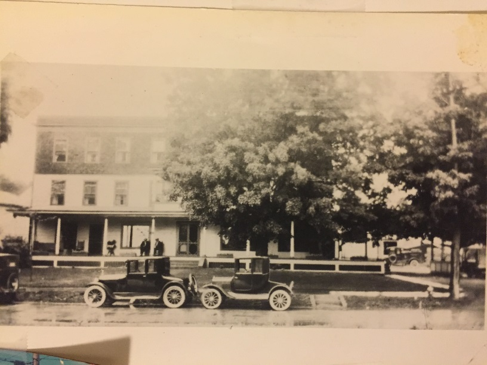
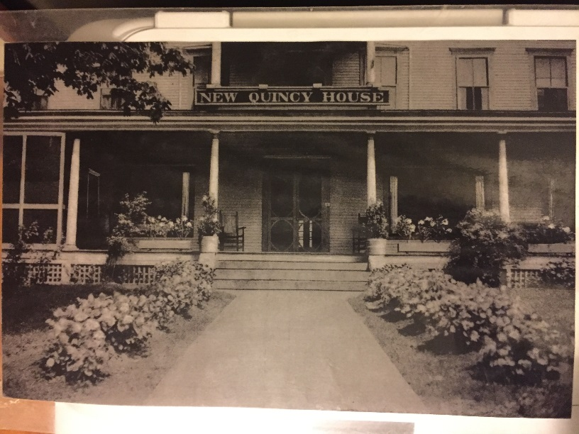

Since 1877, the Quincy Hotel has been a gathering place for locals and a welcoming stop for travelers. Join us in the ground floor restaurant, tavern, and porch for dinner or drinks with friends; choose a room or studio suite for a brief or extended stay. Enosburg Falls village is 10 miles from the Canadian border, 15 miles from St. Albans, 25 miles from Jay Peak, 40 miles from Burlington, and 90 miles from Montreal. One of Vermont's delightful "rail trails" passes a stone's throw from the door, for hikers, bikers, and snowmobiles in season. The Missisquoi river runs through the village; you can reach Lake Champlain by kayak. Watch this space! Renovations are underway, and we plan to reopen in the fall of 2017 with a menu featuring local food and wine, craft beer, and cider. Follow us on Facebook, or drop us a line at info@quincyhotelvt.com Thanks & we hope to see you soon.